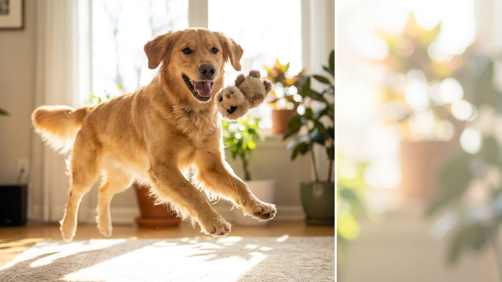

Кот утаскивает вкусняшку под диван, а собака старательно «закапывает» косточку в плед носом, будто там настоящая земля. Выглядит забавно и немного нелепо, но за этим — вполне серьёзный инстинкт, которому тысячи лет. Разберёмся, зачем питомцы прячут еду, когда это просто мило, а когда стоит присмотреться внимательнее.
🐾 Экономьте на лишних визитах к врачу
Сначала спросите AI-ветеринара в AnimaLife — часто этого достаточно, чтобы понять, нужен ли визит к врачу.
В дикой природе еда достаётся не каждый день. Предки собак и кошек, добыв больше, чем могли съесть сразу, прятали излишки про запас — закапывали или уносили в укромное место, чтобы вернуться позже и чтобы добычу не нашли конкуренты. Этот механизм у наших питомцев никуда не делся, хотя миска давно наполняется по расписанию.
Поэтому «закапывание» косточки в диван или лакомства под ковёр — не каприз и не жадность. Это работа очень старой программы, которая говорит: «еда есть — сохрани её на чёрный день».
Собака чаще действует напоказ: носом «зарывает» кусок в плед, подушку или угол, утрамбовывает воображаемую землю и довольно уходит. Многим важен сам ритуал, а не тайник — про спрятанное они могут и забыть.
Кошки прячут тише и хитрее: утаскивают вкусняшку в укромный угол, под мебель, иногда «закапывают» миску лапой рядом с ней. Кошачье «загребание» у миски часто означает не тайник, а сигнал: «наелась, остальное — на потом».
🐾 Всё о вашем питомце — в одном приложении
AI-ветеринар, дневник, напоминания о прививках и уходе. Установите AnimaLife — это бесплатно, в Telegram и MAX.
🐾 Понравился разбор?
Подпишитесь на канал — каждый день разбираем по одному тревожному симптому у кошек и собак: что в пределах нормы, а когда пора к врачу. Подпишитесь, чтобы не пропустить разбор, который может спасти здоровье вашего питомца.
Если питомец изредка прячет лакомство и в целом ведёт себя обычно — это милая особенность, поводов для тревоги нет. Присмотреться стоит, когда привычка меняется или усиливается:
Такое поведение бывает связано со стрессом, конкуренцией за ресурс или самочувствием. Если оно закрепилось — стоит обсудить это с ветеринаром, а перемены в аппетите описать врачу.
Ругать за тайники бессмысленно: питомец не понимает, за что его наказывают, и просто начнёт прятать тщательнее. Вместо этого кормите порционно и убирайте миску через 15–20 минут — так меньше «излишков», которые хочется припрятать. Скоропортящиеся кусочки, которые унесли в тайник, лучше спокойно находить и убирать, чтобы питомец не съел их позже испортившимися.
А если хочется дать инстинкту выход — предложите миску-головоломку или спрячьте пару кусочков корма по квартире сами. Пусть питомец «охотится» и находит: это и есть та самая программа запасания, только в безопасном и полезном виде.